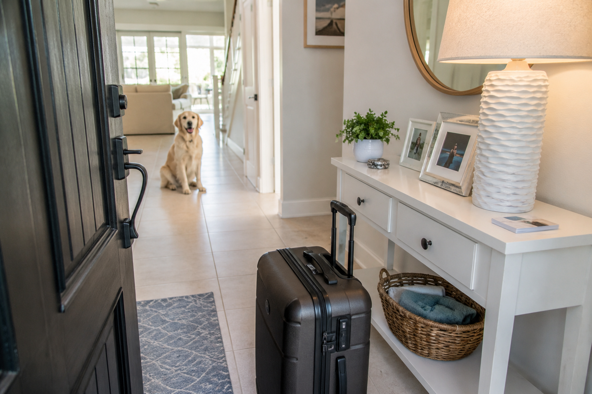
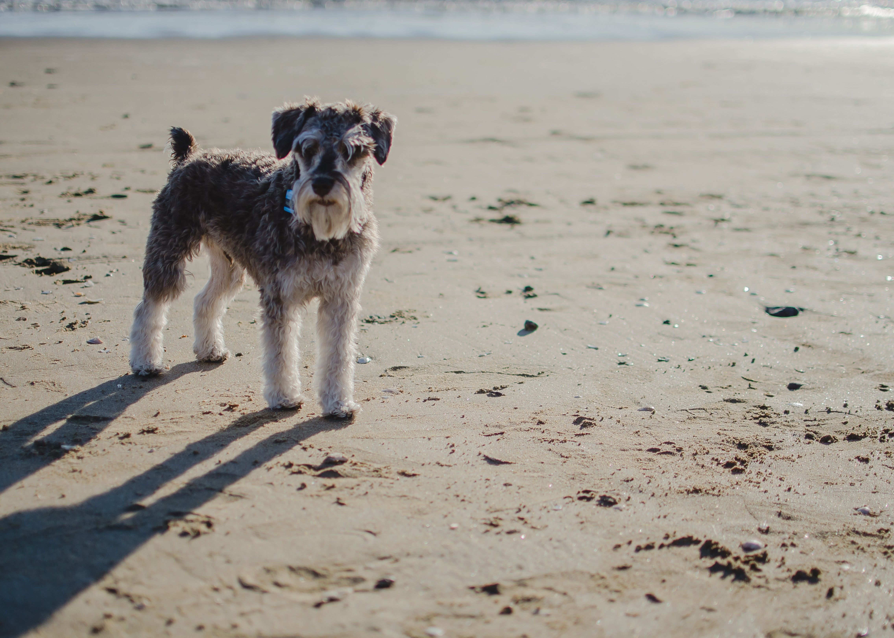

The Best Sarasota Neighborhoods for Dog Owners (And Where We Walk Every Day)
Not all Sarasota neighborhoods are equal when you have a dog. From Laurel Park's mature tree canopy to Gulf Gate's quiet streets and Siesta Key's island pace — here's where we actually walk, every day, and what makes each neighborhood work for dogs.
Read article

The Ultimate Sarasota Pet Owner's Guide: Choosing and Preparing a Pet Sitter
How do you find a pet sitter who's actually qualified to care for your dog in Sarasota's heat, hurricane season, and wildlife-rich environment? Everything you need to know before you hand over your house key.
Read article

The Snowbird Checklist: Managing Your Home & Pets
Heading north for the summer? From setting your thermostat to securing pet care for the animals staying behind, this complete checklist covers everything Sarasota snowbirds need before they leave.
Read article

Sarasota Summers: Keeping Your Furry Friend Cool and Happy
Sarasota summers are brutal for dogs. Here's how to keep your pet safe, cool, and comfortable during Florida's hottest months — with practical tips from local pet care pros who walk dogs in this heat every day.
Read article
The Best Time to Walk Your Dog in Sarasota, FL
Sarasota's heat and humidity make walk timing critical for your dog's safety. Here's the best time of day to walk your dog across every season.
Read article

Are You a Pet Mom? Here's Why You Deserve a Shoutout This Mother's Day
Pet moms do it all — feeding, walking, vet visits, and endless love. Here's why Sarasota's pet moms deserve serious recognition this Mother's Day.
Read article

How a Dog Attendant Can Help You Include Your Pet in Your Wedding
Want your dog in your wedding? A professional wedding dog attendant makes it possible. Here's exactly how it works and what to expect on your big day.
Read article
Mastering Dog Training: From Puppies to Adults
A practical guide to dog training at every life stage — from early puppy socialization to adult behavioral work, positive reinforcement, and when to get professional help.
Read article
The Future of Pet Care: What's Changing and What Stays the Same
Pet care is evolving — from technology and scheduling apps to shifting owner expectations around transparency and personalization. Here's what the future looks like.
Read article
The Power of Paws: How Dog Walking Benefits Your Furry One
Regular dog walks do far more than provide bathroom breaks. Here's the full picture of how daily walking benefits your dog physically, mentally, and emotionally.
Read article

Paw Paradise: Discover Why Sarasota Is a Dog Lover's Dream
Sarasota is one of the best cities in America for dog owners — from dog-friendly beaches to shaded parks and pet-welcoming restaurants.
Read article

Dog Sitter in Sarasota, FL: In-Home Pet Sitting That Feels Like Family
Looking for a trusted dog sitter in Sarasota? Learn what sets professional in-home pet sitting apart — and why it's the best option for your dog's wellbeing.
Read article
Dog Trainer in Sarasota, FL: Professional Guidance for Every Breed
Looking for a dog trainer in Sarasota? Here's how professional dog training support and structured care services can make a real difference for your pet.
Read article